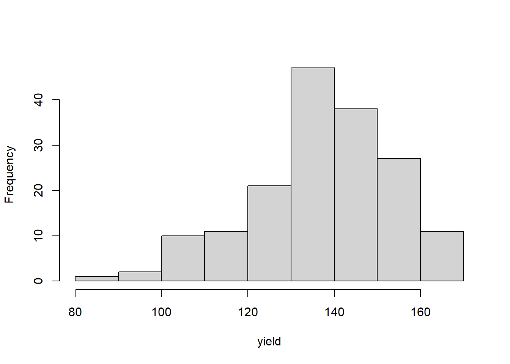
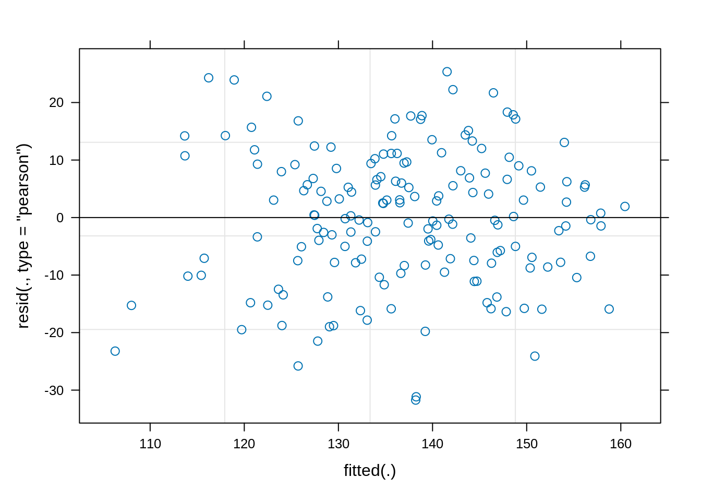
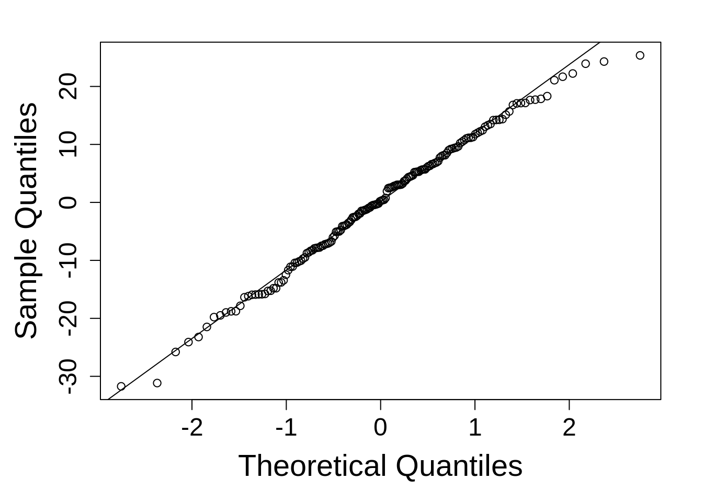

library(lme4); library(lmerTest); library(emmeans)
library(dplyr)3 Randomized Complete Block Design
This is a simple model that can serve as a good entrance point to mixed models.
It is very common design where experimental treatments are applied at random to experimental units within each block. The blocks are intended to control for a nuisance source of variation, such as over time, spatial variance, changes in equipment or operators, or myriad other causes.
3.1 Background
The statistical model:
\[y_{ij} = \mu + \alpha_i + \beta_j + \epsilon_{ij}\] Where:
\(\mu\) = overall experimental mean \(\alpha\) = treatment effects (fixed) \(\beta\) = block effects (random) \(\epsilon\) = error terms
\[ \epsilon \sim N(0, \sigma)\]
\[ \beta \sim N(0, \sigma_b)\]
Both the overall error and the block effects are assumed to be normally distributed with a mean of zero and standard deviations of \(\sigma\) and \(sigma_B\), respectively.
‘iid’ assumption for error terms
In this model, the error terms, \(\epsilon\) are assumed to be “iid”, that is, independently and identically distributed. This means they have constant variance and they each individual error term is independent from the others.
This guide will later address examples when this assumption is violated and how to handle it.
3.2 Example Analysis
First, load the libraries for analysis and estimation:
library(dplyr)
library(multilevelmod); library(broom)Next, let’s load some data. It is located here if you want to download it yourself (recommended).
This data set is for a single wheat variety trial conducted in Aberdeen, Idaho in 2015. The trial includes 4 blocks and 42 different treatments (wheat varieties in this case). This experiment consists of a series of plots (the experimental unit) laid out in a rectangular grid in a farm field. The goal of this analysis is the estimate the yield and test weight of each variety and the determine the rankings of each variety with regard to yield.
var_trial <- read.csv(here::here("data", "aberdeen2015.csv"))| block | blocking unit |
| range | column position for each plot |
| row | row position for each plot |
| variety | crop variety (the treatment) being evaluated |
| stand_pct | percentage of the plot with actual plants growing in them |
| days_to_heading_julian | Julian days (starting January 1st) until plot “headed” (first spike emerged) |
| lodging | percentage of plants in the plot that fell down and hence could not be harvested |
| yield_bu_a | yield (bushels per acre) |
There are several variables present that are not useful for this analysis. The only thing we are concerned about is block, variety, yield_bu_a, and test_weight.
3.2.1 Data integrity checks
The first thing is to make sure the data is what we expect. There are two steps:
- make sure data are the expected data type
- check the extent of missing data
- inspect the independent variables and make sure the expected levels are present in the data
- inspect the dependent variable to ensure its distribution is following expectations
str(var_trial)'data.frame': 168 obs. of 10 variables:
$ block : int 4 4 4 4 4 4 4 4 4 4 ...
$ range : int 1 1 1 1 1 1 1 1 1 1 ...
$ row : int 1 2 3 4 5 6 7 8 9 10 ...
$ variety : chr "DAS004" "Kaseberg" "Bruneau" "OR2090473" ...
$ stand_pct : int 100 98 96 100 98 100 100 100 99 100 ...
$ days_to_heading_julian: int 149 146 149 146 146 151 145 145 146 146 ...
$ height : int 39 35 33 31 33 44 30 36 36 29 ...
$ lodging : int 0 0 0 0 0 0 0 0 0 0 ...
$ yield_bu_a : num 128 130 119 115 141 ...
$ test_weight : num 56.4 55 55.3 54.1 54.1 56.4 54.7 57.5 56.1 53.8 ...These look okay except for block, which is currently coded as integer (numeric). We don’t want run a regression of block, where block 1 has twice the effect of block 2, and so on. So, converting it to a character will fix that. It can also be converted to a factor, but I find character easier to work with, and ultimately, equivalent to factor conversion
var_trial$block <- as.character(var_trial$block)Next, check the independent variables. Running a cross tabulations is often sufficient to ascertain this.
table(var_trial$variety, var_trial$block)
1 2 3 4
06-03303B 1 1 1 1
Bobtail 1 1 1 1
Brundage 1 1 1 1
Bruneau 1 1 1 1
DAS003 1 1 1 1
DAS004 1 1 1 1
Eltan 1 1 1 1
IDN-01-10704A 1 1 1 1
IDN-02-29001A 1 1 1 1
IDO1004 1 1 1 1
IDO1005 1 1 1 1
Jasper 1 1 1 1
Kaseberg 1 1 1 1
LCS Artdeco 1 1 1 1
LCS Biancor 1 1 1 1
LCS Drive 1 1 1 1
LOR-833 1 1 1 1
LOR-913 1 1 1 1
LOR-978 1 1 1 1
Madsen 1 1 1 1
Madsen / Eltan (50/50) 1 1 1 1
Mary 1 1 1 1
Norwest Duet 1 1 1 1
Norwest Tandem 1 1 1 1
OR2080637 1 1 1 1
OR2080641 1 1 1 1
OR2090473 1 1 1 1
OR2100940 1 1 1 1
Rosalyn 1 1 1 1
Stephens 1 1 1 1
SY Ovation 1 1 1 1
SY 107 1 1 1 1
SY Assure 1 1 1 1
UI Castle CLP 1 1 1 1
UI Magic CLP 1 1 1 1
UI Palouse 1 1 1 1
UI Sparrow 1 1 1 1
UI-WSU Huffman 1 1 1 1
WB 456 1 1 1 1
WB 528 1 1 1 1
WB1376 CLP 1 1 1 1
WB1529 1 1 1 1There are 42 varieties and there appears to be no misspellings among them that might confuse R into thinking varieties are different when they are actually the same. R is sensitive to case and white space, which can make it easy to create near duplicate treatments, such as “eltan” and “Eltan” and “Eltan”. There is no evidence of that in this data set. Additionally, it is perfectly balanced, with exactly one observation per treatment per rep. Please note that this does not tell us anything about the extent of missing data.
Here is a quick check I run to count the number of missing data in each column.
apply(var_trial, 2, function(x) sum(is.na(x))) block range row
0 0 0
variety stand_pct days_to_heading_julian
0 0 0
height lodging yield_bu_a
0 0 0
test_weight
0 Alas, no missing data!
If there were independent variables with a continuous distribution (a covariate), I would plot those data.
Last, check the dependent variable. A histogram is often quite sufficient to accomplish this. This is designed to be a quick check, so no need to spend time making the plot look good.
hist(var_trial$yield_bu_a, main = "", xlab = "yield")

The range is roughly falling into the range we expect. I know this from talking with the person who generated the data, not through my own intuition. I do not see any large spikes of points at a single value (indicating something odd), nor do I see any extreme values (low or high) that might indicate some larger problems.
Data are not expected to be normally distributed at this point, so don’t bother running any Shapiro-Wilk tests. This histogram is a check to ensure the the data are entered correctly and they appear valid. It requires a mixture of domain knowledge and statistical training to know this, but over time, if you look at these plots with regularity, you will gain a feel for what your data should look like at this stage.
These are not complicated checks. They are designed to be done quickly and should be done for every analysis if you not previously already inspected the data as thus. I do this before every analysis and often discover surprising things! Best to discover these things early, since they are likely to impact the final analysis.
This data set is ready for analysis!
3.2.2 Model Building
Recall the model:
\[y_{ij} = \mu + \alpha_i + \beta_j + \epsilon_{ij}\]
For this model, \(\alpha_i\) is the variety effect (fixed) and \(\beta_j\) is the block effect (random).
Here is the R syntax for the RCBD statistical model:
model_rcbd <- lmer(yield_bu_a ~ variety + (1|block),
data = var_trial,
na.action = na.exclude)tidy_rcbd <- linear_reg() %>%
set_engine("lmer") %>%
fit(yield_bu_a ~ variety + (1|block), data = var_trial, na.action = na.exclude)The parentheses are used to indicate that ‘block’ is a random effect, and this particular notation (1|block) indicates that a ‘random intercept’ model is being fit. This is the most common approach. It means there is one overall effect fit for each block. I use the argument na.action = na.exclude as instruction for how to handle missing data: conduct the analysis, adjusting as needed for the missing data, and when prediction or residuals are output, please pad them in the appropriate places for missing data so they can be easily merged into the main data set if need be.
Formula notation
Formula notation is often used in the R syntax for linear models. It looks like this: \(Y ~ X\), where Y is the dependent variable (the response) and X is/are the independent variable(s) (e.g. the experimental treatments).
my_formula <- formula(Y ~ treatment1 + treatment2)
class(my_formula)[1] "formula"The package ‘lmer’ has some additional conventions regarding the formula. Random effects are put in parentheses and a 1| is used to denote random intercepts (rather than random slopes).
3.2.3 Check Model Assumptions
Remember those iid assumptions? Let’s make sure we actually met them.
There is a special plotting function written for lme4 objects for checking the homoscedasticity (constant variance):
plot(model_rcbd)

We are looking for a random and uniform distribution of points. This looks good!
Checking normality requiring first extracting the model residuals with resid() and then generaing a qq-plot and line.
qqnorm(resid(model_rcbd)); qqline(resid(model_rcbd))

This is reasonably good. Things do tend to fall apart at the tails.
3.2.4 Inference
Estimates for each treatment level can be obtained with the ‘emmeans’ package.
rcbd_emm <- emmeans(model_rcbd, ~ variety)
as.data.frame(rcbd_emm) %>% arrange(desc(emmean)) variety emmean SE df lower.CL upper.CL
Rosalyn 155.2703 7.212203 77.85 140.91149 169.6292
IDO1005 153.5919 7.212203 77.85 139.23310 167.9508
OR2080641 152.6942 7.212203 77.85 138.33536 167.0530
Bobtail 151.6403 7.212203 77.85 137.28149 165.9992
UI Sparrow 151.6013 7.212203 77.85 137.24245 165.9601
Kaseberg 150.9768 7.212203 77.85 136.61794 165.3356
IDN-01-10704A 148.9861 7.212203 77.85 134.62729 163.3450
06-03303B 148.8300 7.212203 77.85 134.47116 163.1888
WB1529 148.2445 7.212203 77.85 133.88568 162.6034
DAS003 145.2000 7.212203 77.85 130.84116 159.5588
IDN-02-29001A 144.5755 7.212203 77.85 130.21665 158.9343
Bruneau 143.9900 7.212203 77.85 129.63116 158.3488
SY 107 143.6387 7.212203 77.85 129.27987 157.9975
WB 528 142.9752 7.212203 77.85 128.61633 157.3340
OR2080637 141.7652 7.212203 77.85 127.40633 156.1240
Jasper 141.2968 7.212203 77.85 126.93794 155.6556
UI Magic CLP 139.5403 7.212203 77.85 125.18149 153.8992
Madsen 139.2671 7.212203 77.85 124.90826 153.6259
LCS Biancor 139.1110 7.212203 77.85 124.75213 153.4698
SY Ovation 138.6426 7.212203 77.85 124.28375 153.0014
OR2090473 137.8229 7.212203 77.85 123.46407 152.1817
Madsen / Eltan (50/50) 136.9642 7.212203 77.85 122.60536 151.3230
UI-WSU Huffman 135.4810 7.212203 77.85 121.12213 149.8398
Mary 134.8564 7.212203 77.85 120.49762 149.2153
Norwest Tandem 134.3490 7.212203 77.85 119.99020 148.7079
Brundage 134.0758 7.212203 77.85 119.71697 148.4346
IDO1004 132.5145 7.212203 77.85 118.15568 146.8733
DAS004 132.2413 7.212203 77.85 117.88245 146.6001
Norwest Duet 132.0852 7.212203 77.85 117.72633 146.4440
Eltan 131.4606 7.212203 77.85 117.10181 145.8195
LCS Artdeco 130.8361 7.212203 77.85 116.47729 145.1950
UI Palouse 130.4848 7.212203 77.85 116.12600 144.8437
LOR-978 130.4458 7.212203 77.85 116.08697 144.8046
LCS Drive 128.7674 7.212203 77.85 114.40858 143.1262
Stephens 127.1671 7.212203 77.85 112.80826 141.5259
OR2100940 126.1523 7.212203 77.85 111.79342 140.5111
UI Castle CLP 125.5277 7.212203 77.85 111.16891 139.8866
WB1376 CLP 123.6932 7.212203 77.85 109.33439 138.0521
LOR-833 122.7565 7.212203 77.85 108.39762 137.1153
LOR-913 118.7752 7.212203 77.85 104.41633 133.1340
WB 456 118.4629 7.212203 77.85 104.10407 132.8217
SY Assure 111.0468 7.212203 77.85 96.68794 125.4056
Degrees-of-freedom method: kenward-roger
Confidence level used: 0.95 This table indicates the estimated marginal means (“emmean”, sometimes called “least squares means”), the standard error (“SE”) of those means, the degrees of freedom and the upper and lower bounds of the 95% confidence interval. As an additional step, the emmeans were sorted from largest to smallest.
At this point, the analysis goals have been met: we know the estimated means for each treatment and their rankings.
3.2.5 Flotsam & Jetsam
Sometimes, researchers want to conduct an ANOVA or add the letters for indicating differences among treatments, even though we have reached the original goals of analysis. It is important to evaluate why you want to do these extra things, what extra information it will bring and what you plan to do with those results.
Running an ANOVA may increase or decrease confidence in the results, depending on what results. That is not at all what ANOVA is intended to do, nor is this what p-values can tell us!
Labelling each treatment, especially when there are this many (42 in total), has its own perils. The biggest problem is that this creates a multiple testing problem: with 42 treatments, a total of 861 comparison are being run (=\(42*(42-1)/2\)), and then adjusted for multiple tests. With that many tests, a severe adjustment is likely and hence things that are different are not detected. With so many tests, it could be that there is an overall effect due to variety, but they all share the same letter!
The second problem is one of interpretation. Just because two treatments or varieties share a letter does not mean they are equivalent. It only means that they were not found to be different. A funny distinction, but alas. There is an entire branch of statistics, ‘equivalence testing’ devoted to just this topic - how to test if two things are actually the same. This involves the user declaring a maximum allowable numeric difference for a variable in order to determine if two items are statistically different or equivalent - something that these pairwise comparisons are not doing.
If you want to run ANOVA, it can be done quite easily:
anova(model_rcbd)Type III Analysis of Variance Table with Satterthwaite's method
Sum Sq Mean Sq NumDF DenDF F value Pr(>F)
variety 18354 447.65 41 123 2.4528 8.017e-05 ***
---
Signif. codes: 0 '***' 0.001 '**' 0.01 '*' 0.05 '.' 0.1 ' ' 1But, please be thoughtful in your usage of it.
na.action = na.exclude
You may have noticed the final argument for na.action in the model statement:
model_rcbd <- lmer(yield_bu_a ~ variety + (1|block),
data = var_trial,
na.action = na.exclude)I use the argument na.action = na.exclude as instruction for how to handle missing data: conduct the analysis, adjusting as needed for the missing data, and when prediction or residuals are output, please pad them in the appropriate places for missing data so they can be easily merged into the main data set if need be.
Since there are no missing data, this step was not strictly necessary, but it’s a good habit to be in.